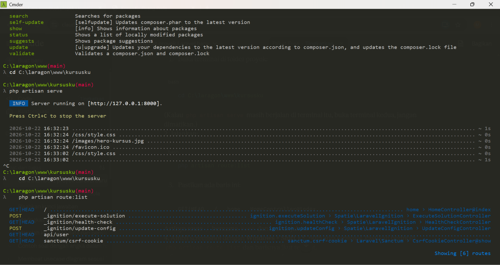

Ganti setiap ISI dengan PASS atau FAIL setelah benar-benar memeriksa project-mu.
use App\Http\Controllers\HomeController;
Route::get('/', [HomeController::class, 'index'])
->name('home');
ISI | routes/web.php exists ISI | named route home ISI | route points HomeController ISI | php artisan route:list menampilkan route home
Hasil runtime php artisan route:list:
